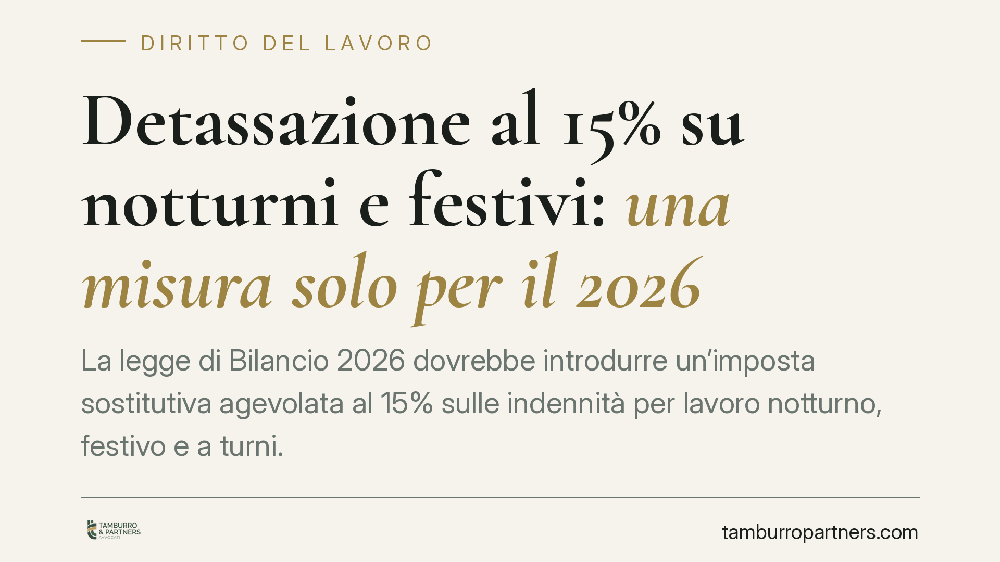

Detassazione al 15% su notturni e festivi: una misura solo per il 2026
La legge di Bilancio 2026 dovrebbe introdurre un'imposta sostitutiva agevolata al 15% sulle indennità per lavoro notturno, festivo e a turni. Il punto critico è la durata: la misura, secondo le anticipazioni, riguarderebbe il solo anno d'imposta 2026, senza garanzia di proroga. Per imprese e lavoratori conviene capire subito perimetro e limiti.

Di cosa si tratta
Secondo le anticipazioni sulla legge di Bilancio 2026, il legislatore avrebbe previsto un regime di tassazione agevolata sulle indennità corrisposte per il lavoro notturno, festivo e organizzato a turni. Al posto della tassazione ordinaria IRPEF, tali somme sarebbero assoggettate a un'imposta sostitutiva con aliquota del 15%.
Un'avvertenza necessaria. Alla data di redazione, il testo definitivo e i riferimenti puntuali (numero della legge, articolo e commi) devono essere verificati sulla Gazzetta Ufficiale una volta pubblicati. Trattiamo quindi la misura al condizionale: quanto segue è ricostruito sulle bozze circolate e va confermato sul testo vigente. Su questo punto invitiamo alla prudenza: le voci agevolabili e le condizioni potrebbero differire dalle anticipazioni.
Che cos'è l'imposta sostitutiva (e perché conta)
L'imposta sostitutiva è un prelievo che "sostituisce" l'IRPEF ordinaria e le relative addizionali su una specifica voce di reddito. Il vantaggio è duplice: aliquota più bassa (15% anziché gli scaglioni progressivi ordinari) e neutralità rispetto al reddito complessivo, perché la somma agevolata non concorre a determinare l'aliquota marginale applicata al resto della retribuzione.
Proprio qui si colloca la questione tecnica più delicata: quali voci rientrano nell'agevolazione. Il punto non è banale. La nozione legale di lavoro notturno è definita dal D.Lgs. 66/2003, che all'art. 1 individua il "periodo notturno" (almeno sette ore consecutive comprendenti l'intervallo tra mezzanotte e le cinque) e la figura del lavoratore notturno. Ma i CCNL adottano spesso definizioni proprie, con fasce orarie e maggiorazioni che non coincidono con quelle di legge.
Di conseguenza, non è scontato che ogni indennità qualificata come "notturna" o "festiva" dal contratto collettivo rientri automaticamente nel perimetro agevolato: occorrerà verificare la corrispondenza tra la voce contrattuale e la nozione richiamata dalla norma agevolativa. È un lavoro di raccordo tra testo normativo, prassi (attesa dall'Agenzia delle Entrate) e clausole del singolo CCNL.
Il vero nodo: una misura a tempo
L'aspetto che merita attenzione non è solo l'aliquota, ma la durata. Secondo le anticipazioni, l'agevolazione riguarderebbe il solo anno d'imposta 2026. In assenza di un successivo intervento legislativo, dal 2027 le stesse indennità tornerebbero alla tassazione ordinaria.
È una dinamica ricorrente per le misure fiscali "sperimentali": vengono introdotte per un periodo circoscritto e la proroga dipende dalle disponibilità di bilancio dell'anno successivo. Non va quindi data per acquisita. Chi imposta politiche retributive pluriennali dovrebbe considerare lo scenario in cui il beneficio non venga confermato.
Cosa cambia per lavoratori e imprese
Per il lavoratore dipendente del settore privato che percepisce con regolarità indennità notturne, festive o di turno, l'effetto atteso è un incremento del netto in busta paga, limitatamente al 2026. L'entità dipende dall'aliquota marginale che sarebbe altrimenti applicata.
Per il datore di lavoro il tema è operativo e di corretta applicazione: individuare le voci agevolabili, adeguare le procedure di elaborazione delle buste paga e gestire correttamente il trattamento in caso di successiva mancata proroga. Errori nell'individuazione delle somme rischiano di generare recuperi e contenzioso.
Cosa fare in concreto
- Attendere la pubblicazione in Gazzetta Ufficiale del testo definitivo e verificare articolo, commi e decorrenza prima di applicare l'agevolazione.
- Mappare, per ciascun CCNL applicato, le voci retributive potenzialmente agevolabili, distinguendole rispetto alla nozione legale di lavoro notturno del D.Lgs. 66/2003.
- Coordinarsi con il consulente del lavoro e il fornitore del software paghe per predisporre l'aggiornamento delle procedure di calcolo.
- Monitorare i documenti di prassi dell'Agenzia delle Entrate, che dovrebbero chiarire il perimetro applicativo.
- Pianificare fin d'ora lo scenario post-2026, informando correttamente il personale sulla natura temporanea del beneficio per evitare aspettative non fondate.
Un'avvertenza sulla comunicazione interna
È opportuno che l'informazione al personale sia trasparente sulla temporaneità della misura. Comunicare l'aumento del netto senza chiarire che riguarda, allo stato, il solo 2026, può generare aspettative destinate a essere disattese e tensioni al momento dell'eventuale ritorno alla tassazione ordinaria.
Disclaimer
Contributo informativo a cura di Tamburro & Partners - Avv. Giuseppe Tamburro. Non costituisce parere legale.
Ogni storia di lavoro ha i suoi tempi.
Se gestisci HR e vuoi un confronto su contenzioso, ispezioni o licenziamenti, scrivi allo studio. Ti rispondiamo entro un giorno lavorativo.